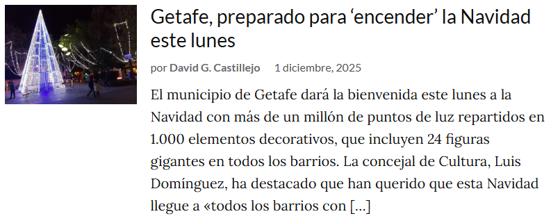
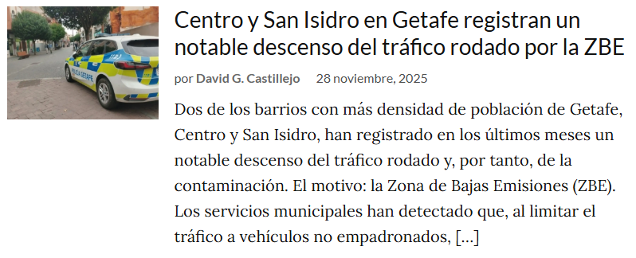

Getafe es una ciudad que late con fuerza propia en el corazón de la Comunidad de Madrid. Con siglos de historia reflejados en su casco antiguo y una energía contemporánea que se respira en cada rincón, combina tradición y modernidad de manera única. Sus plazas, parques y calles cuentan historias que van desde raíces medievales hasta su papel actual como motor industrial y universitario, ofreciendo al visitante una experiencia rica y diversa.
Al mismo tiempo, Getafe es un epicentro cultural y social: el Teatro Federico García Lorca, sus festivales, la Universidad Carlos III y la pasión deportiva del Coliseum convierten la ciudad en un espacio dinámico y vibrante. Aquí conviven conocimiento, creatividad y naturaleza, con parques como La Alhóndiga que aportan un respiro verde. Getafe invita a descubrirla con todos los sentidos: paseando, aprendiendo, disfrutando y viviendo su carácter auténtico.
NOTICIAS

